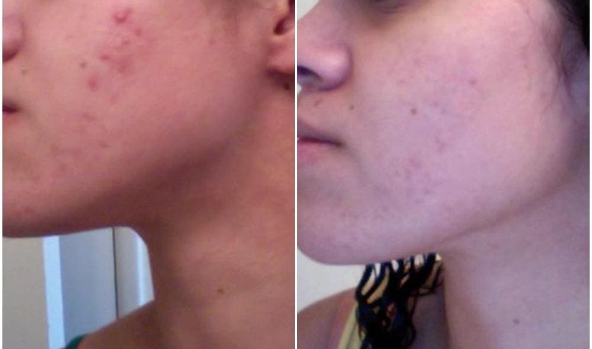
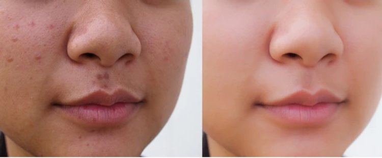
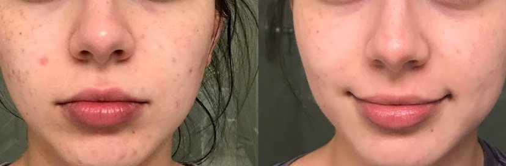

बिना दर्पण के जीवन
मेरा चेहरा मुहासो से भरा हुआ था पहले तो ये सफेद रंग के दिखाई दिए उसके बाद ये गहरे होते चले गए और वो बहोत ही दर्दनाक थे।
कोई फेस पाउडर काम नहीं आया जो में निशान को छुपा सकू मेकअप से और तवाचा खराब हो रही थी, रोम छिद्र कम होने के बदले और बड़े हो गए थे, मैंने सोचा मैं मुहसो को फोड दू पर ऐसा करने से अंदर से खून निकलने लगा और ये और दर्दनाक देखने लगे।
मैं इतनी सुंदर थी पर मेरे पति भी बाद में मेरे चुम्बन से बचे थे, उनका दोश भी नहीं है। मैंने घृणा में दर्पण में अपने प्रतिबिंब को देखा। मुझे पैसे ने नहीं बचाया। मैं शहर में सबसे अच्छे कॉस्मेटोलॉजी क्लीनिक में गई। परीक्षण के बाद, मुझे मुँहासे के उपचार के लिए एक पर्चे मिले।
पिंपल्स से लड़ने में लगातार विफलता
समस्याग्रस्त त्वचा के लिए नया उत्पाद। मैंने एंटी-मुँहासे उत्पादों की एक पूरी श्रेणी खरीदी: क्लींजिंग जेल, टोनर, सीरम और क्रीम। और यह केवल बदतर था। मेरा चेहरा लाल दानो से ढका हुआ था। एक त्वचा विशेषज्ञ ने मुझे बताया कि यह एक मुँहासे उपचार, बेंज़ॉयल पेरोक्साइड की एलर्जी की वजह से हुआ। इसने सिर्फ मेरी त्वचा को छील और जला दिया व मुझे उनसे केवल काले धब्बे / जलन मिली।
मेरे चेहरे पर मुहासो के और झुरियो के निशान दिखे दे रहे थे मुझे बाहर जाने में शर्म आती थी ऐसा लता था जैसे सब मुझे देख रहे होंगे। मैं पार्लर नहीं जा पा रही थी मेरे नाखून बहुत गंदे लग रहे थे मेरे पास और कोई विकल्प नहीं था मैं बस स्कूल से बच्चों को लेने जाति और आती थी। केवल एक चीज जिसने मुझे बचाया वह दुपट्टा था।
मैं केवल 15 प्रक्रियाओं में से केवल 2 के लिए गयी थी। दर्द असहनीय था क्योंकि मेरी त्वचा एक लेजर उपचार के नीचे जला दी गई थी। मुझे दर्द निवारक द्वारा मदद नहीं मिली और मैं सो नहीं सकी। मैं लगभग सब कुछ से पागल हो गयी। बेशक, कोई भी मेरे पैसे वापस नहीं आया।
मैं इंजेक्शन से बहुत डरती हूं और मैं चेहरे पर मारा नहीं जाना चाहता थी। एकमात्र चीज क्लिनिक ने मुझे इसकी पेशकश की थी कि मेसोथेरेपी थी। मुझे अन्य विशेषज्ञों और उन सभी को बदलने की कोई इच्छा नहीं थी जो मेरे लिए समझ में नहीं आए। जिन्होंने उन्हें सबसे अच्छा माना, मेरी उम्मीदों को पूरा नहीं किया, न कि मेरी उम्मीदों का आधा हिस्सा।
चहरे पर दाने कहाँ गए और मुझे क्या मदद मिली?
मेरे पास omniscient इंटरनेट की ओर मुड़ने के अलावा कोई विकल्प नहीं मेरे पास इंटरनेट की ओर मुड़ने के अलावा कोई विकल्प नहीं था। जितना अधिक मैं लेख और मंच पढ़ती हूं, उतना ही मैंने सीरम के बारे में टिप्पणियां देखीं । उन्होंने लिखा कि इस पूरक में प्रभावी हर्बल अवयव हैं जो मुँहासे और अन्य त्वचा की समस्याओं जैसे पिग्मेंटेशन, पोस्ट-मुँहासे की समस्याओं, स्किनिंग त्वचा और यहां तक कि झुर्रियों को कम करने में मदद करता है। मैंनें आदेश दिया।
यह केवल उन्हें देने के लिए 2 दिन ले लिया। मैंने कोशिश की सोने से पहले। सीरम मेरी त्वचा पर सुखद था। इससे मेरी त्वचा को नरम करने में मेरी मदद मिली। त्वचा की सूखापन और मजबूती की भावना जो मैंने पहले एक पल में गायब हो गई थी। अगली सुबह मैं जाग गयी और दर्पण में गयी और मुझे तुरंत खेद हुआ कि मैंने पहले इस उत्पाद का उपयोग नहीं किया था!
मैंने खरीदने का सबसे अच्छा निर्णय लिया था।
शानदार प्रभाव
मैं अपनी आँखों पर विश्वास नहीं कर सकी। रातोंरात, इस सीरम ने सूजन और त्वचा की लाली को राहत दी। पिंपल्स सूख गए और खून निकलना भी बंद हो गया था।
मैंने मुँह को धोया,सूती कपडे से अपना मुँह साफ़ किया। और मुझे कहना होगा कि सीरम में सुखद गंध थी और चेहरे पर कोई सुखापन नहीं था। शाम को, मेरी त्वचा में तेल की चमक नहीं थी। इसके विपरीत, इस सीरम में त्वचा के रंग पर एक सुखद प्रभाव पड़ा।
मेरी त्वचा एक सप्ताह के लिए अपरिचित थी। कोई नया पिंपल नहीं थे लेकिन दाग अभी भी वहां थे। लेकिन इसके बावजूद, मेरे मनोदशा में सुधार हुआ। मैं तुरंत बाहर जाना चाहती थी। मैंने पार्लर जाके मैनीक्योर करवाने का सोचा।
पति ने तुरंत बदलावों को देखा। मैंने सीरम के दो और पैक खरीदने का फैसला किया क्योंकि मैं इसे सुबह और शाम दोनों का उपयोग करती हूं।
हर दिन मैं आईने में अपना चेहरा देखने से रोक नहीं पाती।दिन बा दिन चेहरे में सुधार हो रहा था और रोम छिद्र भी बंद हो रहे थे और ब्लैकहेड्स भी कम थे चेहरे में कोई नया पिम्पल नहीं था।मेरे पति मुझे फिर से एक अकर्षित नज़रों से देखते थे। यहां तक कि बच्चों ने मुझे बताया कि उनके पास फिर से एक सुंदर माँ है।
धैर्य।
मैं एक महीने में मुँहासे से राहत पाने में कामयाब रही। इस अवधि के दौरान, मैंने सीरम की दो बोतलों का उपयोग किया । कोई नया पिम्पल नहीं। अब मै खुश हु। मैं फिर से आसमान में हूँ। मेकअप, आँसू और परिसरों की एक मोटी परत के बिना।
मुझे बस दाग को हटाने की जरूरत है मैं सोचती थी क्या मैं कभी इनसे जीत पाउंगी अपने चेहरे को कैसे बेदाग रखू फिर मुझे मिला जिसने मुहासों की लड़की में मेरा साथ दिया चेहरा अब मैं साफ है मैं इस्का प्रयोग आगे भी जारी रखूंगी आशा करती हूं की यह कभी काम करना बंद न करें।
लड़कियों मुझे पता है कि कैसे मुंह और झुर्री जीवन और मनोदशा को नष्ट करती हैं। मुझे इस सीरम को छिपाने का कोई अधिकार नहीं है और यही कारण है कि मैं आधिकारिक पृष्ठ पर एक लिंक साझा कर रही हूं जहां आप ऑर्डर कर सकते हैं ब्यूटीशियन और फार्मेसियों के लिए नि: शुल्क।
ने मेरी मदद की, और वह निश्चित रूप से आपकी भी मदद करेगा! टिप्पणियों में अपने अनुभव और परिणामों के बारे में लिखें।
पारुल गिल
मैंने हाल ही में आधिकारिक वेबसाइट पर आदेश दिया है। दूसरों की तरह, मैंने ब्लॉग के लेखक की सिफारिश के अनुसार आदेश दिया। मैं इसे केवल 3 दिनों के लिए उपयोग कर रही हूं और मैं पहले से ही प्रभाव देख सकती हूं! ऐसा लगता है कि दागो को मिटा दिया जा रहा है! उन्होंने इसे मेरे घर के पते पर पहुंचाया।
लिली
लड़कियों, अब तक का सबसे अच्छा उत्पाद है! सीरम बाकी की तुलना में सबसे अच्छा उत्पाद है। मैं इसे रात में इस्तमाल करता हूं। सुबह में मेरी त्वचा नरम होती है, मेरे रंग में एक अच्छा गुलाबी रंग दीखाई देता है, कोई लालिमा या मुहासे नहीं होता है। मैं इसे किसी भी चीज़ के लिए व्यापार नहीं करूंगी।
पूर्णिमा
मैंने उत्पाड का इस्तमाल करना शुरू कर दिया है दोस्तो मेरी घबड़ाहट अब दूर हो गयी ये सच में काम करता है मेरे चेहरे से दाग कम हो रहे है मैं इस्का इस्तमाल जारी रखूंगी
बोजन
वाह! परिणाम बहुत अच्छे हैं!
रुखसार
मैं आमतौर पर टिप्पणियां लिखती नहीं हूं, लेकिन मुझे यहां करना है। मैंने सीरम की एक बोतल का उपयोग किया। और मैं एक और बोतल आदेश देना चाहती हूं। मैं लेखक की टिप्पणियों और सिफारिशों में शामिल हूं। आप शर्मिंदा नहीं होंगे। त्वचा वास्तव में रेशम, चिकनी और साफ होती है। कोई पिंपल या लाली नहीं। मैं एक साफ और बेदाग तवाचा के साथ हूं।
गायत्री
मैं सहमत हूं। मैंने दो साल पहले टीवी पर विज्ञापन देख कर क्रीम मंगा ली और अगली सुभा मेरे चेहरे पिंपल्स से भरा हुआ था मैंने लेजर ट्रीटमेंट भी लिया और काई उत्पादन इस्तेमाल किया पर कोई असर नहीं हुआ अखिरकार मैं जीत गयी के साथ मिल कर हराया।
मुस्कान
मैंने उन लोगों को कभी नहीं समझी जो वास्तव में प्रभावी सामग्री के साथ एक अच्छा उत्पाद खरीदने के बजाय कुछ प्रसिद्ध ब्रांडेड उत्पाद के लिए पैसे देने के इच्छुक हैं।
जेलेना
मैंने इस उत्पाद को कहीं भी नहीं देखा है। मैंने अपने ब्यूटीशियन से पूछा और उसने कहा कि उसने कभी इस बारे में नहीं सुना था। मैं इसे सौंदर्य प्रसाधनों के साथ जोखिम नहीं उठाऊंगा जिसका परीक्षण नहीं किया गया है। विशेष रूप से जब आपको पहले से ही मुँहासे जैसी समस्याएं हैं।
मधु
लड़कियों, मुझे कल एक शिपमेंट मिला। मैं कोर्स शुरू कर रही हूँ। मुझे अच्छे की आशा है! मैं अब अपना चेहरा और इस तरह से नहीं देख सकती वह मुझे बहुत परेशान करता है। मेरे चेहरे पर मुहासे है और ये गहरे इसलिय हो गए है क्योंकि मैं इन्हें निछोड़ देती हूं मैं तो अपने पिता के सामने भी खड़ी नहीं हो सकती हूं। मुझे उम्मीद है कि यह मेरी मदद करेगा।
शालिनी
मुझे इस सीरम से प्यार है! यह वास्तव में मुँहासे और झुरियो और दोषों के खिलाफ काम करता है जो उनके पीछे रहते हैं। अब मेरी त्वचा को देखो।
नताशा
एक दोस्त, एक ब्यूटीशियन ने मुझे इस बारे में बताया। यह वास्तव में एक अच्छा उत्पाद है, महंगा नहीं है और काम करता है।
Sanja_333
हाय लड़कियों! मुझे इस तरह के सकारात्मक परिणाम की बिलकुल भी उम्मीद नहीं थी। यह एक लोकप्रिय ब्रांड नहीं है और इसे स्टोर में ढूंढना लगभग असंभव है। लेकिन यह मेरे लिए एक असली उद्धार है! एक ब्यूटीशियन ने मुझे इसके बारे में बताया था। यदि आपके पास मुँहासे है, तो आप इसे ज़रुर इस्तमाल करे! मैं यह नहीं कह सकती कि यह जल्दी से काम करता है पर ये धीरे-धीरे आपको परिणाम दिलाता है जो स्थायी होते हैं। मेरे पास मुंह, निशान थे (मैं उन्हें निचोड़ रही थी और घाव और गहरे होते जा रहे थे), उम्र के धब्बे और झुर्रियों। मैं एक तस्वीर पोस्ट करूंगी ताकि आप तुलना कर सकें कि यह पहले कैसे था और यह कैसे बाद में था:
मंदाकिनी
नमस्ते देवियों! यह सच है कि कॉस्मेटिक्स बाजार पर सबसे अच्छा उत्पाद है। यह सभी त्वचा की समस्याओं से राहत देता है और हाइपोलेर्जेनिक है और जलन के डर के बिना गर्म होता है तो इसका उपयोग किया जा सकता है, लेकिन एक सुरक्षात्मक कारक का उपयोग किया जाना चाहिए। मैं इसे एक त्वचा विशेषज्ञ के रूप में कहती हूं। मेरे कोर्स में मैं अनुशंसा करती हूं मुँहासे के सबसे अच्छा है।
सारिका
ओह, और मैंने सभी प्रकार के उत्पादों की कोशिश की है। कुछ भी मेरी मदद नहीं की। मैं इसका आदेश दूंगी इसलिए मैं देख सकती हूं कि क्या होता है।
अनन्या कुलकर्णी
 यदि आप मुंहासों से पीड़ित हैं तो यह मुंहासों को कम करने वाला अद्भुत उत्पाद है। मेरे पास कभी भी एक अच्छी त्वचा नहीं थी, लेकिन जब मैं 26 वर्ष की हुई तो मेरे हार्मोन नियंत्रण से बाहर हो गए और मुझे पहली बार सिस्टिक मुँहासे होने लगे। यह मेरे जीवन में अब तक की सबसे खराब त्वचा थी। मैंने सचमुच हर सैलिसिलिक एसिड जेल, मास्क से कोशिश की.. सब कुछ... किसी ने भी मदद नहीं की जब तक मैंने से कोशिश नहीं की! मुझे स्वीकार करना होगा, मुझे पहले तो संदेह हुआ।मेरी त्वचा दो सप्ताह के बाद साफ होने लगी और फिर खराब होने लगी, लेकिन मैं इसके साथ बनी रही। इसके साथ बने रहे, आपकी त्वचा "शुद्ध" हो जाएगी क्योंकि यह आपकी त्वचा की सतह पर मृत त्वचा कोशिकाओं और बैक्टीरिया की गहरी परतें लाता है। लगभग एक सप्ताह के निरंतर उपयोग के बाद मैंने अपनी त्वचा को वास्तव में साफ़ होते हुए देखना शुरू कर दिया। 4 सप्ताह के बाद मेरी त्वचा लगभग पूरी तरह से साफ हो गई है, कुछ निशानों को छोड़कर जो अभी भी फीके पड़ रहे हैं। यह वास्तव में एकमात्र उत्पाद है जो मेरी त्वचा को साफ रखता है क्योंकि हार्मोनल मुँहासे विशेष रूप से विशिष्ट मुँहासे क्रीम के लिए प्रतिरोधी है। इसे इस्तेमाल करने से पहले मुझे हर हफ्ते एक नई फुंसी तो होनी ही थी। इसने मेरी त्वचा को वापस सामान्य होने में मदद की है और मैं इसका उपयोग करना कभी बंद नहीं करुंगी!
पामेला बोबाली
 मैंने अपने जीवन के दर्द के लिए अपने त्वचा विशेषज्ञ से मिलने के लिए अनगिनत राशि खर्च की है। मुझे कभी नहीं बताया गया कि मेरी त्वचा की स्थिति क्या है, लेकिन मैंने अपनी भौंहों के आसपास, अपने मुंह के आसपास और अपनी ठुड्डी के नीचे त्वचा के रंग के धब्बे विकसित कर लिए। मेरे त्वचा विशेषज्ञ ने रेटिनॉल और अन्य उत्पादों को निर्धारित किया जिससे मेरा चेहरा परतदार और शुष्क हो गया। मेरे लिए कुछ भी काम नहीं किया! पिछले 3 सालों में मैंने बहुत सारे उत्पाद आजमाए लेकिन किसी ने भी मेरा दर्द दूर नहीं किया। जाहिर तौर पर मैंने डॉक्टर द्वारा दिए गए उत्पाद को बंद कर दिया। त्वचा के रोम छिद्र त्वचा को भद्दा बना देते हैं जिससे त्वचा खुरदुरी दिखती है। काफी खोजबीन के बाद मैंने खुद इस उत्पाद का पता लगाया। मैंने इस उत्पाद को देखा और सोचा… क्यों नहीं। मैंने बाकी सब कुछ इस्तेमाल किया है। 3 दिन में मेरे मुंहासे दूर होने लगे। मुझे विश्वास नहीं हो रहा था!!! अब दो हफ्ते हो गए हैं और मेरा चेहरा साफ है। यह उत्पाद अद्भुत है। पहले मैंने इसे खराब समीक्षाओं के कारण खरीदा नहीं था, इसलिए मैं केवल इतना कह सकती हूं कि यह शायद हर तरह के मुँहासे के लिए काम नहीं करता हो, पता नहीं ... लेकिन यह पूरी तरह से कॉमेडोन मुहांसो के लिए बिल्कुल काम करता है। मैं इस उत्पाद को हमेशा के लिए खरीदूंगी! मेरी साफ त्वचा के लिए धन्यवाद !!!!!
नैंसी
 ये शुद्ध असली है! मेरी उम्र 31 साल है, और मैं पिंपल्स से पीड़ित हूँ। मुझे अपनी छोटी उम्र से ही पिंपल्स थे, और जब तक कोविड के स्थानिक होने से पहले तक मुझे ब्रेकआउट की कोई समस्या नहीं थी। मैं होटल में काम करती हूं इसलिये मुझे मास्क पहनना होता था। हां, मैंने विज्ञापन देखे हैं, लेकिन मैं किशोर नहीं हूं। मैं उम्र बढ़ने से नहीं लड़ रही थी, लेकिन अचानक शुरू होने वाले सिस्टिक मुँहासे से लड़ रही थी, और बिना सोचे-समझे कोई भी उत्पाद इस्तेमाल करके उन्हें और भी बदतर कर लिया था। अब 30 दिन हो गए, ऊपर की तस्वीर 3 सप्ताह और 1 महीने की है। कोई मेकअप नहीं, कोई फिल्टर नहीं। मुझे पहले तस्वीर न लेने का अफसोस है। पहले सप्ताह के अंत मे चेहरे से पतली परत सी निकलने लगी। दुसरे सप्ताह मे मेरे चेहरे पर सभी प्रकार के मुंहासे थे। और मैं हार मानने वाली थी। मुझे लगता है कि मुझे समझ में नहीं आया कि यह बेहतर की बजाये खराब होती जा रही है। ('या तो यह पहले जैसी हो जाए या फिर इसमे सुधार हो जाए' की उम्मीद कर रही थी।) बदसूरत, भयानक, असहज, स्थूल। ये बहुत ही दर्द नाक था पर कुछ सप्ताह बाद मेरी त्वचा में बदलाव आया मेरी त्वचा की बनावट में समग्र रूप से सुधार हुआ, और मेरे पति, जिन्होंने मुझे पहले कभी बिना मुँहासे के साथ नहीं देखा था, आश्चर्यचकित थे कि मेरा चेहरा कितना नरम है। नए पिंपल्स डार्क स्पॉट्स हल्के होते जा रहे थे। जैसे की आप एक नया जीवन जी रहे हो फुल कॉन्फिडेंट के साथ नकारात्मक सोच से कई दूर धन्यवाद मुझे यह पसंद है!